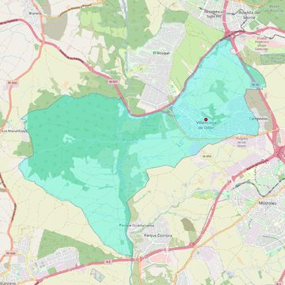

Santiago Apóstol
- Arciprestazgo
- Villaviciosa de Odón
- Población
- Villaviciosa de Odón
- Dirección postal
- Avda. Laura García Noblejas, 1
- Código postal
- 28670
- Extensión
- 49,89 km² (4.989 ha)
- Teléfono
- 916 160 160
- Correo electrónico
- info@parroquiasantiagoapostol.com
- Información demográfica
- De la parroquia · De la población (Villaviciosa de Odón) · Del arciprestazgo (Villaviciosa de Odón)
- Resumen para imprimir
- La parroquia en una hoja (A4)


Descargar mapaLímites según decreto
"Partiendo de la confluencia de la carretera C-501 con el término municipal de Brunete, arrancan por los límites de los términos municipales de Villaviciosa de Odón y Brunete (en dirección suroeste); siguen por los límites de los términos municipales de Villaviciosa de Odón y Sevilla la Nueva (en dirección sur), de Villaviciosa de Odón y Navalcarnero (en dirección sureste), de Villaviciosa de Odón y Móstoles (en dirección noreste), de Villaviciosa de Odón y Alcorcón (en dirección norte), de Villaviciosa de Odón y Boadilla del Monte (en dirección noroeste), por el eje de la carretera C-511 (en dirección suroeste) y por el eje de la carretera C-501 (en dirección suroeste y noroeste) hasta el término municipal de Brunete, punto de partida".
(Decreto de rectificación de límites de 30-5-99; Boletín de junio de 1999, pág. 647)
¿Algún dato de esta parroquia es incorrecto o ha cambiado? Comuníquenoslo.